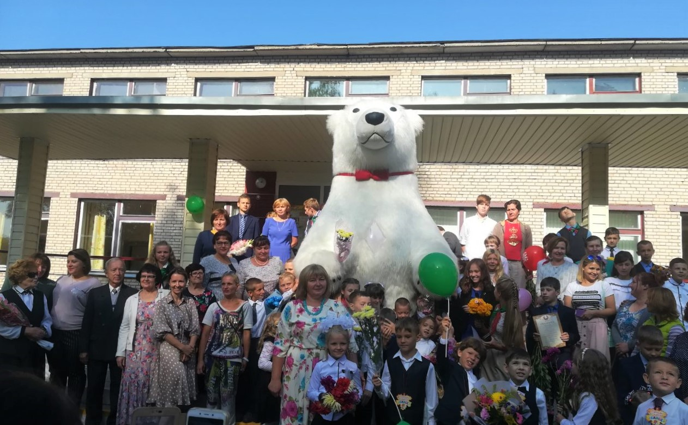
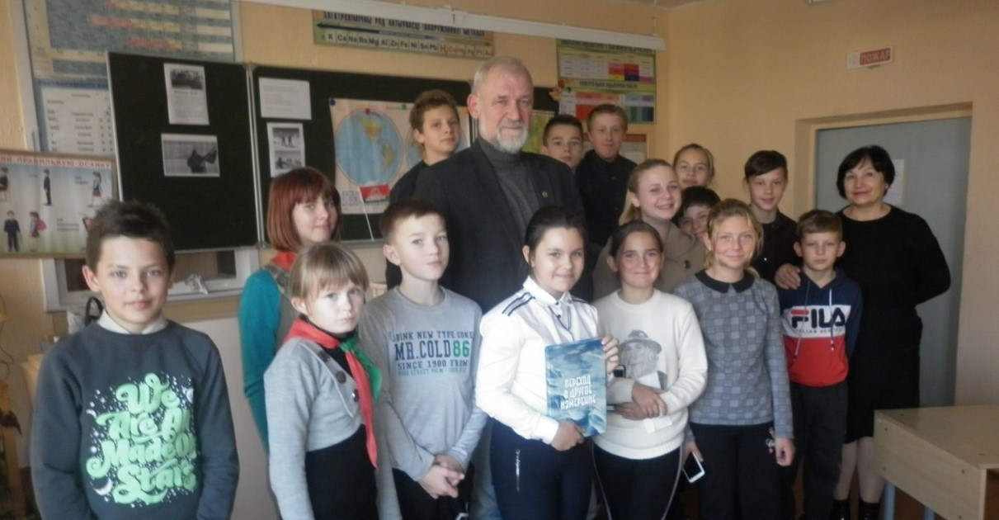
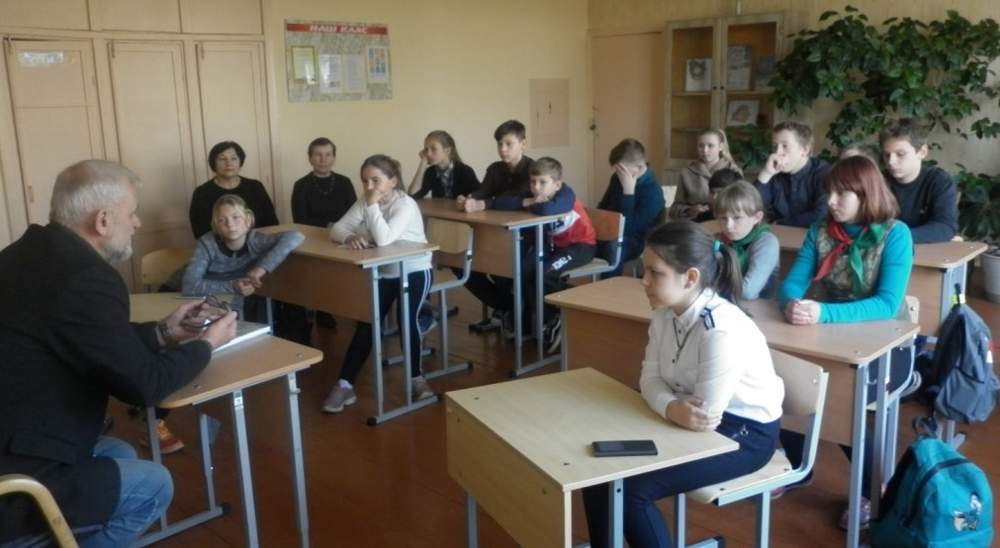

1 сентября - День Знаний!

У гэтым годзе Дзень ведаў прайшоў сваеасабоіва. На святочную лінейку да вучняў, бацькоў, настаўнікаў і гасцей завітаў незвычайны госць- адзіны на прасторах Еўропы чатырохметровы белы мядзведзь, каб усіх павіншаваць з пачаткам новага навучальнага 2019/2020 года. Усе прысутныя былі прыемна здзіўлены і знаходзіліся пад вялікім ураджаннем. Пасля святочнай лінейкі быў зроблены фотаздымак на памяць. Гэты дзені,які стане запамінальным не толькі для першакласнікаў, але і ўсіх прысутных.
1 сентября 2019
“ШАГ”- “Школа Активного Гражданина”


В рамках проведения единого дня информирования “ШАГ”- “Школа Активного Гражданина”. Сто вопросов к взрослому: события, факты, комментарии” для учащихся 8-9 классов ГУО “Озеричинский УПК детский сад-базовая школа” 24 октября 2019 года состоялась встреча с председателем Озеричинского избирательного участка №28 Белевич Людмилой Леонидовной, которая рассказала о предстоящих выборах, о том, кто имеет право быть избранным в Палату представителей.
Второй блок- встреча с человеком с интересной биографией. Этот человек на протяжении долгих лет принимает участие в экспедициях к Северному и Южному полюсам, на которых поднял флаг Республики Беларусь. Ребята с интересом слушали рассказы о путешествиях этого замечательного человека, задавали ему вопросы. Владимир Никандрович подарил свою последнюю книгу “Переход в другое измерение”
24 октября 2019